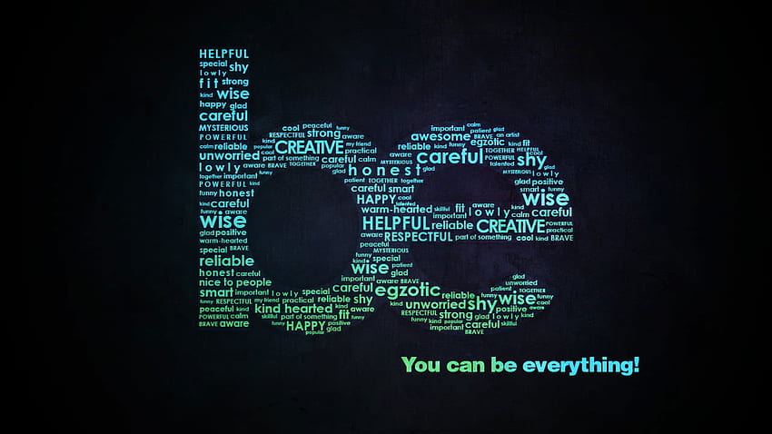
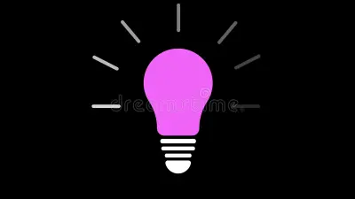
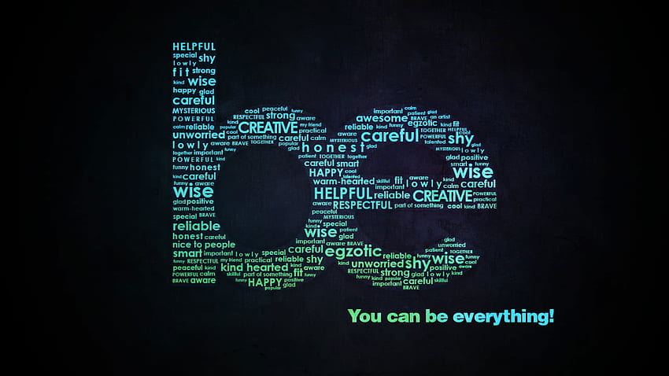
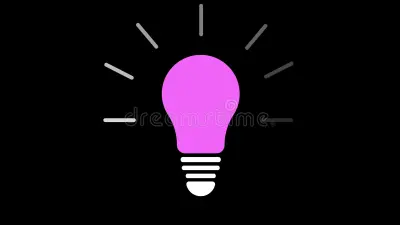

Introduction To The Problem
People today are less creative due to factors like constant digital consumption, rigid education systems focused on conformity, and societal pressures prioritizing productivity over innovation. The overwhelming availability of ready-made solutions and fear of failure also discourage experimentation and original thinking. Despite this, the potential for creativity remains, but it requires environments that encourage curiosity, risk-taking, and freedom to explore new ideas.

Creative Solution
- Reform Education : Implement project-based learning and creative curricula that prioritize critical thinking, collaboration, and hands-on experiences over standardized testing.
- Foster Creative Work Environments : Encourage workplaces to create cultures that embrace experimentation, allow flexible work arrangements, and reduce the fear of failure.
- Encourage Active Creation : Promote active engagement in creative pursuits, such as arts, writing, and coding, while reducing passive digital consumption through mindful practices.
- Promote Community and Collaboration : Establish creative hubs and collaborative spaces where individuals can share ideas, experiment, and support one another in their creative endeavors.
- Allow Time for Reflection : Incorporate practices that provide individuals with time for deep thinking and reflection, such as mindfulness, journaling, or dedicated creative time, to nurture their creative potential.
Factors Of Solution
The following are some of the primary factors that contribute to the decline in creativity:
1. Overload of Information
In today’s digital world, we are constantly bombarded with information, which can overwhelm the mind and stifle creative thought.

2. Stress and Anxiety
High levels of stress and anxiety restrict the mind's ability to think freely, leading to a lack of creative energy.

3. Fear of Failure
People are afraid of taking risks and failing, which often prevents them from thinking outside the box.

4. Rigid Educational Systems
Traditional educational systems tend to prioritize standardized testing and structured learning, leaving little room for creative exploration.

Benefits Of The Solution
The benefits of fostering creativity through these solutions are significant. Encouraging creativity leads to enhanced problem-solving skills, as individuals learn to think critically and approach challenges from diverse perspectives. This can drive innovation across industries, fueling economic growth and societal advancement.
1. Enhanced Problem-Solving
Encouraging creativity fosters innovative thinking, allowing individuals to tackle complex problems more effectively.

2. Increased Innovation
A creative society drives technological advancements, new products, and solutions that fuel economic growth.

3. Improved Mental Well-being
ngaging in creative activities promotes self-expression, reduces stress, and enhances overall mental health.

4. Adaptable and Lifelong Learning
Developing creative thinking in education and work helps individuals become more adaptable, resilient, and open to lifelong learning.

SCAMPER Technique for Creativity
The SCAMPER method is a powerful tool to reignite creativity. By asking seven key questions, you can reshape ideas and discover new possibilities:
Substitute
What can be replaced? Swap out parts of an idea to see it differently.

Combine
How can we merge ideas or elements? Combining ideas sparks innovation.

Adapt
What can we adapt or change? Adapting helps modify existing concepts.

Magnify
Can we enlarge or exaggerate certain elements to make them stand out?

Put to Another Use
Is there another way to use this idea or object? Find new purposes.

Eliminate
What can be removed? Simplifying can lead to clearer creative results.

Rearrange
What if we change the order of things? A new arrangement can spark creativity.

Mind Map of Creative Solutions
The following mind map illustrates a brainstorm of solutions to overcome creativity blocks:

Fishbone Diagram (Cause and Effect)
The fishbone diagram below identifies the root causes of the creativity crisis, helping us address each area effectively.

Gallery of Creative Inspiration
 



.jpeg)
Implementation
To boost creativity, education systems should emphasize critical thinking and project-based learning. Workplaces can foster innovation by encouraging experimentation and reducing fear of failure. Reducing passive digital consumption and promoting creative activities like art or writing also helps. Societal attitudes must shift to value creativity, with support for arts and innovation hubs. Lastly, individuals should be given time for reflection and personal growth to nurture their creative potential.
Visuals
A visual representation of the decline in creativity could include:
Conclusion
In summary, the decline of creativity in today's society is influenced by several interconnected factors, including the overwhelming consumption of digital content, rigid educational systems, and societal pressures that prioritize conformity and productivity over innovation. These factors create an environment where individuals often feel constrained in their ability to think creatively and take risks. To counter this trend, it is essential to cultivate spaces that encourage curiosity and experimentation, both in education and the workplace. By reforming educational practices, fostering supportive work cultures, and promoting active engagement in creative activities, society can begin to restore and enhance the creative capacities of individuals. Recognizing and valuing creativity as a vital skill can lead to improved problem-solving, greater innovation, and enhanced overall well-being, ultimately contributing to a more dynamic and resilient society.